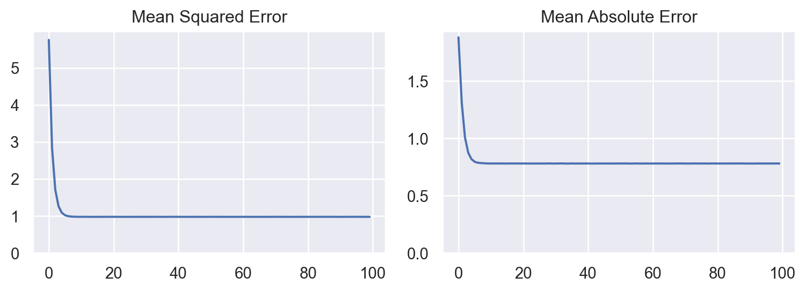
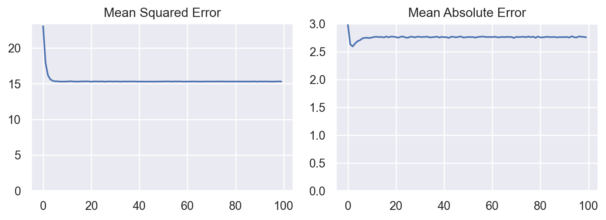
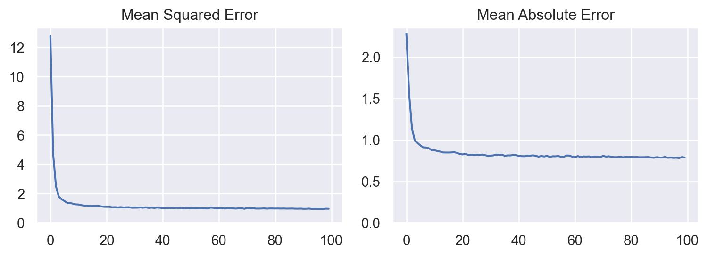

import tensorflow as tf
import numpy as np
import pandas as pd
import seaborn.objects as so2 Dealing with Regression Problems
TensorFlow 2 (TF2) provides a whole set of tools to implement machine learning to a wide range of problems, from preparing the data to deploying a model. In this post, I demonstrate how to use the package to build a regression model predicting continuous numerical values based on input data.
The objective of this demo is to show you the main elements of working with a TF2 model to tackle regression problems.
2.1 Setup
Important libraries are loaded, namely tensorflow, numpy to manipulate data, pandas to deal with table, and seaborn to create visualisation. As part of the setup, I also clean the TF2 environment with clear_session function and set seed for random number generation using set_random_seed function.
For the visualisation, I attempted to use the seaborn.objects interface. The reason for this is that I am familiar with the ggplot2 package in R when conducting data analysis, and I found that there is some similarity in both approach of creating a plot. For those who aren’t familiar with ggplot2 package, it employs the concept of layered grammar of graphics allowing you to describe any plots in a more structured way which result in more convenient and consistent code. You can see the documentations for the seaborn.objects interface here and the ggplot2 package here.
tf.keras.backend.clear_session()
tf.keras.utils.set_random_seed(123)2.2 Generate Random Data
For the sample problem, I generated a 1000 observations of random number with two independent variables \(x_0\) and \(x_1\). The target for prediction is calculated using simple formula below.
\[ y = f(x) = 0.2 \times x_0 + 2.8 \times x_1 + \epsilon \]
All variables \(x_0\) and \(x_1\) as well as the error term \(\epsilon\) follow a normal distribution \(N(\mu, \sigma^2)\) with \(\mu = 0\) and \(\sigma^2 = 1\).
X = np.random.normal(size = (1000, 2))
y = 0.2 * X[:, 0] + 2.8 * X[:, 1] + np.random.normal(size = (1000,))For evaluation of model, I split the data, 80% for training and 20% for testing.
X_train = X[:800]
y_train = y[:800]
X_test = X[800:]
y_test = y[800:]
X_train.shape, y_train.shape, X_test.shape, y_test.shape, ((800, 2), (800,), (200, 2), (200,))2.3 A Very Simple TF2 Model
2.3.1 Defining the model
Defining a TF2 model can be accomplished easily by calling the Sequential method, followed by adding any types and number of layers. As the problem is very straightforward, tackling this should be relatively easy. For this reason, the model I defined here is very simple with only one Dense layer with one perceptron unit. In addition, we need to define the input_shape so that the model can determine the number of parameters it requires to predict all inputs. The summary method allows you to see the architecture of the model.
model = tf.keras.models.Sequential()
model.add(tf.keras.layers.Dense(1, input_shape = (2, )))
model.summary()Model: "sequential"
_________________________________________________________________
Layer (type) Output Shape Param #
=================================================================
dense (Dense) (None, 1) 3
=================================================================
Total params: 3
Trainable params: 3
Non-trainable params: 0
_________________________________________________________________Before training the model, you are required to choose the optimizer, loss function, and metrics, and compile those into the model. Here, I decided to use Stochastic Gradient Descent algorithm for optimizing the model (i.e., updating neural network parameters), Mean Squared Error (MSE) for determining how far the prediciton of the current model with actual values, and Mean Absolute Error (MAE) as a metric to evaluate the model.
model.compile(optimizer = "sgd", loss = "mse", metrics = ["mae"])2.3.2 Training the model
Training can be done using fit method. The process is done after 100 epochs or cycles of the model updating its parameters based on input data. The verbose parameter that equals 0 means that the training will not print any information.
history = model.fit(X_train, y_train, epochs = 100, verbose = 0)The fit method returns History object, which provides you the performance of the model during training. The history.history contains all loss and metric scores for all training epochs, and you can extract this information to evalate your model. I performed some manipulation basically to have a certain format of data (the long version, you might want to refer to tidy data by Hadley Wickham).
data = pd.DataFrame(history.history)
data = data.reset_index()
data = data.rename(columns = {
"index":"epoch",
"loss": "Mean Squared Error",
"mae": "Mean Absolute Error"})
data = pd.melt(
data,
id_vars = "epoch",
value_vars = ["Mean Squared Error", "Mean Absolute Error"],
var_name = "metric",
value_name = "value"
)
data.sort_values(by = "epoch").head()| epoch | metric | value | |
|---|---|---|---|
| 0 | 0 | Mean Squared Error | 5.752564 |
| 100 | 0 | Mean Absolute Error | 1.881032 |
| 1 | 1 | Mean Squared Error | 2.836762 |
| 101 | 1 | Mean Absolute Error | 1.315763 |
| 2 | 2 | Mean Squared Error | 1.707698 |
We can then visualise how the model perform throughout the training.
(
so.Plot(data, x = "epoch", y = "value")
.facet("metric")
.add(so.Line())
.share(y = False)
.limit(y = (0, None))
.layout(size = (8, 3))
.label(x = "", y = "")
)
2.3.3 Evaluating the model
Finally, we can check the model’s performance on the test dataset. The evaluate method allows the users to see how the model perform when predicting unseen data. The model seems to do good in predicting the actual output based on the MSE and MAE.
mse, mae = model.evaluate(X_test, y_test, verbose = 0)
print(f"Mean Squared Error : {mse:.2f}")
print(f"Mean Absolute Error: {mae:.2f}")Mean Squared Error : 0.90
Mean Absolute Error: 0.772.4 Dealing with Non-linearity
It is well known that deep learning models are good for high dimensional and complex data. To illustrate the capability of a model in dealing with that type of data, I slightly modified the problem by squaring x_1, giving a non-linear property to the data. The final formula is presented below.
\[ y = f(x) = 0.2 \times x_0 + 2.8 \times x_1^2 + \epsilon \]
All variables \(x_0\) and \(x_1\) as well as the error term \(\epsilon\) follow a normal distribution \(N(\mu, \sigma^2)\) with \(\mu = 0\) and \(\sigma^2 = 1\).
X = np.random.normal(size = (1000, 2))
y = 0.2 * X[:, 0] + 2.8 * X[:, 1] ** 2 + np.random.normal(size = (1000,))
X_train = X[:800]
y_train = y[:800]
X_test = X[800:]
y_test = y[800:]
X_train.shape, y_train.shape, X_test.shape, y_test.shape, ((800, 2), (800,), (200, 2), (200,))Using the same approach as above might not give you the best result as you can see in the graphs below. Both MSE and MAE can be significantly higher compared to the values from the previous problem.
model = tf.keras.models.Sequential()
model.add(tf.keras.layers.Dense(1, input_shape = (2, )))
model.compile(optimizer = "sgd", loss = "mse", metrics = ["mae"])
history = model.fit(X_train, y_train, epochs = 100, verbose = 0)
data = pd.DataFrame(history.history)
data = data.reset_index()
data = data.rename(columns = {"index":"epoch",
"loss": "Mean Squared Error",
"mae": "Mean Absolute Error"})
data = pd.melt(data,
id_vars = "epoch",
value_vars = ["Mean Squared Error", "Mean Absolute Error"],
var_name = "metric",
value_name = "value")
(
so.Plot(data, x = "epoch", y = "value")
.facet("metric")
.add(so.Line())
.share(y = False)
.limit(y = (0, None))
.layout(size = (8, 3))
.label(x = "", y = "")
)
mse, mae = model.evaluate(X_test, y_test, verbose = 0)
print(f"Mean Squared Error : {mse:.2f}")
print(f"Mean Absolute Error: {mae:.2f}")Mean Squared Error : 14.94
Mean Absolute Error: 2.752.5 Going Deeper by Using More Layers
As the name suggests, Deep Learning techniques leverages several intermediate representation of the data before finally decide what value to assign for any given input. This supports finding complex patterns that are usually inherent in real world data.
The previous model is modified simply by adding more Dense layers and increasing the number of the units. The activation function in a model is crucial for capturing non-linearity. The relu activation function is a function that gives either a positive value or zero which is suprisingly effective for balancing the trade-offs between finding non-linear pattern and efficient computation. As each subsequent layer can determine the number of parameters required through inferring the number of units from the previous layer, input_shape is only defined for the first layer.
model = tf.keras.models.Sequential()
model.add(tf.keras.layers.Dense(32, activation = "relu", input_shape = (2, )))
model.add(tf.keras.layers.Dense(32, activation = "relu"))
model.add(tf.keras.layers.Dense(1))
model.compile(optimizer = "sgd", loss = "mse", metrics = ["mae"])
model.summary()Model: "sequential_2"
_________________________________________________________________
Layer (type) Output Shape Param #
=================================================================
dense_2 (Dense) (None, 32) 96
dense_3 (Dense) (None, 32) 1056
dense_4 (Dense) (None, 1) 33
=================================================================
Total params: 1,185
Trainable params: 1,185
Non-trainable params: 0
_________________________________________________________________As can be seen in the plots below and the values of MSE and MAE, the ‘deeper’ version of the model could better capture the inherent trend of the dataset leading to more superior model than the previous one.
history = model.fit(X_train, y_train, epochs = 100, verbose = 0)
data = pd.DataFrame(history.history)
data = data.reset_index()
data = data.rename(columns = {"index":"epoch",
"loss": "Mean Squared Error",
"mae": "Mean Absolute Error"})
data = pd.melt(data,
id_vars = "epoch",
value_vars = ["Mean Squared Error", "Mean Absolute Error"],
var_name = "metric",
value_name = "value")
(
so.Plot(data, x = "epoch", y = "value")
.facet("metric")
.add(so.Line())
.share(y = False)
.limit(y = (0, None))
.layout(size = (8, 3))
.label(x = "", y = "")
)
mse, mae = model.evaluate(X_test, y_test, verbose = 0)
print(f"Mean Squared Error : {mse:.2f}")
print(f"Mean Absolute Error: {mae:.2f}")Mean Squared Error : 1.04
Mean Absolute Error: 0.822.6 Conclusion
In this post, I demonstrate how to leverage a small subset of TensorFlow 2 capabilities to deal with artificial datasets. Even though here only includes problems with structured data with well defined problems and boundaries, Deep Learning model in essence allows anyone to do Machine Learning for highly unstructured data such as images and texts.